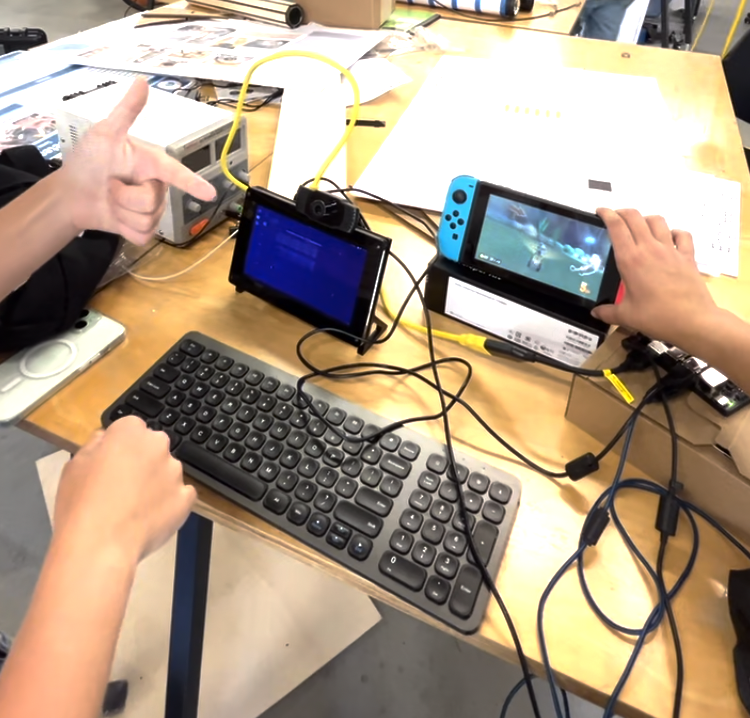

Built a real-time gesture-to-controller stack for Nintendo Switch: YOLOv8 hand detection, MediaPipe keypoint tracking, ORB/BF gesture matching, and Bluetooth HID emulation on Jetson Orin.
Project Overview
The pipeline ingests webcam frames, detects hands with a custom-trained YOLOv8 model (EgoHands), extracts 21 hand landmarks with MediaPipe, then classifies gesture commands using ORB feature matching with brute-force cross-checking against reference templates.
Key Features
- Detection + Tracking: YOLOv8 hand detection followed by MediaPipe landmark extraction per frame.
- Gesture Classification: ORB + brute-force matcher with thresholded feature matches (>= 110) for command mapping.
- Controller Emulation: nxbt-based Bluetooth HID spoofing to present as a Switch Pro Controller/JoyCon device.
- Edge Deployment: End-to-end inference and command relay on NVIDIA Jetson Orin (Ubuntu 22.04).
- Measured Performance: 30 fps runtime with 165 ms average gesture-to-action latency.
Technical Details
Six Mario Kart controls were mapped to reference gestures and serialized to HID inputs after classification. The model stack was optimized for real-time gameplay, with YOLO handling robust hand localization, MediaPipe providing rotation-stable keypoints, and ORB matching adding lightweight geometric verification before transmission to the Switch.